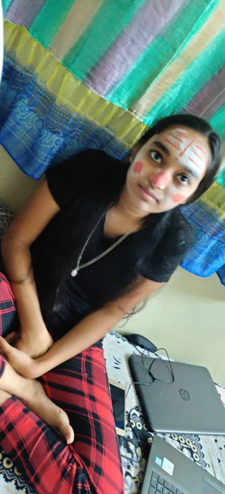

Keetri is a living organism who thinks she is a human being (Type- Girl) .She never accepts who she is and always argues with others about her knowing what she is. She came from a forest area near Warangal. Keetri has two sisters, Zombie and Tejaswini.

Keetri does nothing but she always thinks that she works all the time. Keetri has been appointed by Sutherland Global Services as an extra package. But she thinks that she is also an regular employee in that organization. She keeps telling people that she works all the time and postpones all the plans by saying that we will do them on weekoff's. She ruins all the enjoyment that others plan and says that she is doing her office work. The organization in which she works has assigned her to take care of two new hieres, at that moment she thought that she was an top notch employee but the real reason was they were taken as cleaning staff.
| Food | Habits |
|---|---|
| Grass | Not eating food of Humans |
| Legumes | Irritating people around me |
Click on this to know truth about Keetri
The real facts